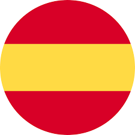

Macro-Releases para módulos
Se ha pedido, se ha rogado, podemos decir que hasta se ha intentado hacer llegar un Navidul sin ser navidades...y por fin podemos decir que ha llegado una de las features más pedidas: Las Macro-Releases (a falta de un nombre mejor)!!
Muchos de los módulos que generamos desde Producto están divididos en distintos repositorios que forman un todo. A la hora de manejar las releases siempre ha sido un poco tedioso hacer las ramas, milestones, pre-releases y releases para poder entregar nuestros módulos validados. En un intento de aliviar este esfuerzo hemos creado esta feature que os animamos a usar. Tenéis toda la documentación sobre cómo usar esta nueva funcionalidad en nuestra documentación.
Disclaimer: Parte de la documentación está siendo migrada.
|
Macro-Releases for modules
It has been requested, it has been prayed for, we can say that even a Navidul was sent without it being Christmas... and finally we can say that one of the most requested features has arrived: The Macro-Releases (currently working on the naming)!!
Many of the modules generated in Product are divided into different repositories. When it comes to managing releases, it has always been a bit tedious to make branches, milestones, pre-releases and releases. In an attempt to alleviate this effort required, we have created Macro-Release feature that we encourage you to use. You have all the documentation on how to use this new functionality in our documentation.
Disclaimer: Part of the documentation is being migrated.
|
|
Despliegues de Keos en Cloud
Desde CICD estamos automatizando el proceso de instalación de Keos en un cluster en cloud, provisionando previamente el cluster con cloud-provisioner.
Vamos a ponerlo en producción para un grupo reducido de usuarios que nos van a ayudar a perfeccionarlo. Cuando esté disponible para todos, os avisaremos de este mismo modo, con una newsletter.
|
Cloud Keos deployments
From CICD we are automating keos installation process in a cloud cluster, using cloud-provioner to create the cluster.
We are going to put it into production for a small group of users who will help us perfect it. When it is available to everyone, we will notify you in the same way, with a newsletter.
|
|
Modificación dependencias en runtime desde PRs
Se ha incluido en la librería la posibilidad de indicar mediante labels de GitHub la versión de las dependencias del proyecto con el objetivo de evitar commits temporales e innecesarios. De esta manera repositorios que tuvieran relación y requiriesen de mas de una PR simultánea pueden trabajar de una forma más sencilla y eficiente. Tenéis toda la documentación aquí.
Disclaimer: Parte de la documentación está siendo migrada.
|
Modifying dependencies in runtime from PRs
The possibility of indicating the version of the project's dependencies using GitHub labels has been included in the library in order to avoid temporary and unnecessary commits. In this way, repositories that are related and require more than one simultaneous PR can work in a simpler and more efficient way. You have all the documentation here.
|
|
|
|
.png "Logo")